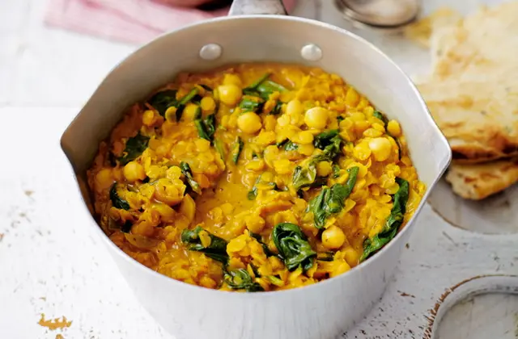

Spinach and chickpea coconut dhal

Make this wholesome and hearty dhal dish
Made with coconut milk, chickpeas and red lentils - the perfect dish to
keep away the chill.
Ingredients:
Recipe yields 4 servings
- 250g red lentils
- 1tbsp vegetable oil
- 1 onion, chopped
- 1 garlic clove, crushed
- 45ml tikka curry paste
- 400g tin chickpeas, drained and rinsed
- 400g tin reduced fat coconut milk
- 200g spinach
- 1 lemon, juiced
Steps:
- Rinse and drain the lentils.
- Heat the oil in a large pan and fry the onion and garlic for a minute over a high heat. Stir in 3 tbsp curry paste and sizzle for another minute, then add the rinsed lentils and 1 tin chickpeas.
- Pour in the coconut milk, then fill the tin with water and add that, too.
- Bring to the boil and cook for about 30 minutes until the lentils are just done.
- Stir in the spinach to wilt, season and add the lemon juice. Serve with plain naan.
Return to the top
Return to main page